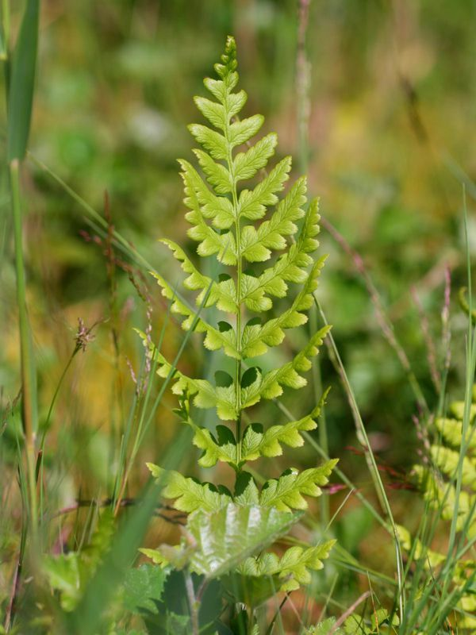

Kammfarn
Dryopteris cristata
Der nässeliebende Kammfarn, ist aufgrund der großräumigen Entwässerungsmaßnahmen der vergangenen Jahrzehnte nun zur Rarität geworden. Diese Art bildet unterschiedliche Blattformen aus. Die sporentragenden Wedel sind schlank, hochgewachsen und mit abgewinkelten Fiedern besetzt. Die sterilen Blätter sind kurz, schlaff und ausgebreitet.